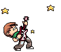
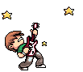

![[ANA JDG] Asterix and the Great Rescue - Megadrive](../vi/6oUXi0ckLmA/default.jpg)
![[ Présentation pour la chaîne Grenier des Joueurs ] JDG Prod](../art/SHAR.6419.583.2.jpg)


Depuis la fin des Ploucs suite à pleins de désaccord et de dégoût de la part de l'un de l'autre (tout le monde est fautif),je me suis mit en tête de garder une trace de ce groupe car il y a de quoi s'inspirer pour de nouvelles histoires et groupes.
Afin de garder la trace, voici la liste des tags qui permettent de visiter les articles en lien avec les différents sujets relatifs aux Ploucs:
LesPloucs
Boredguy08
FanYoshiBleu
Pokémon_Master
Yunko
Sachez que chaque Ploucs est partit de son coté pour de nouvelle aventure donc si ils le veulent,je veux bien vous passer de quoi les retrouver!
FanYoshiBleu est sur WattPad: https://www.wattpad.com/user/FanYoshiBleu
Yunko est sur Twitter: https://twitter.com/YunkoLeTordu
KidpaddleetcieGlin
Description :
Le Blog d'une personne aillant découvert internet en 2007 qui partage une partie de sa vie mais surtout ses réflexions, ses découvertes et ses cours!
Bon, je ne vous garantit pas que 100% du contenu est fiable mais aux moins je l'approuve! :)
N'oubliez pas de me retrouver sur les autres sites internet du réseaux KidpaddleetcieGlin retrouvable dans le premier article de chaque page. ^-^
Bon, je ne vous garantit pas que 100% du contenu est fiable mais aux moins je l'approuve! :)
N'oubliez pas de me retrouver sur les autres sites internet du réseaux KidpaddleetcieGlin retrouvable dans le premier article de chaque page. ^-^
Je bosse actuellement pour la chaîne Grenier des Joueurs
Son morceau préféré
Retour au blog de KidpaddleetcieGlin
[Docteur Mario]
[Docteur Mario]
Une ombre file dans la nuit
C'est un pédophile qui s'enfuit
Et comme un sale rat il sourit
Son crime restera impuni
Une ambulance qui surgit
Un coup de rein, des pneus qui crient
Un coup de feu qui retentit
La justice s'appelle Doc-kiki
Dans la chaleur
De la nuit
Le mâle est toujours ready
Aucun PD ne l'impressionne
Les coups durs il les affectionne
Et la justice le passionne
Docteur Mario ne craint personne
Lorsque les coups de feu résonnent
Comme un éclair elle tourbillonne
Surtout si la fille est trop bonne
Docteur Mario ne craint personne
Comme un violeur il suit sa proie
Pour que la justice et le droit
Triomphent, il est prêt à donner
Toute sa vie sans hésiter
Quand sa silhouette apparaît
Les brigands se mettent à trembler
Ils savent qu'ils ne pourront jamais
Echapper à sa pine en acier
Dans la chaleur
De la nuit
Le mâle est toujours ready
Aucun PD ne l'impressionne
Les coups durs il les affectionne
Et la justice le passionne
Docteur Mario ne craint personne
Lorsque les coups de feu résonnent
Comme un éclair elle tourbillonne
Surtout si la fille est trop bonne
Docteur Mario ne craint personne
Je suis heureux d'avoir eût suffisamment de ressource pour commencer à faire des BD sur les Ploucs!
Ce seront des BD mettant en scène en une page des situations improbables où les protagonistes sont Boredguy,Yunko Blakguitar, FanYoshiBleu,Glin et le Doc.
Bien sur, d'autres personnages peuvent se manifester pour une planche ou l'autre mais je diversifierais le contenu pour éviter les répétitions et donc les idées!
N'oubliez pas que je fais ça de manière indépendante et qu'il se peut qu'il y aille des erreurs comme des fautes d'orthographes... c'est pour ça qu'il faut commenter et proposer des idées! ;)
Ce seront des BD mettant en scène en une page des situations improbables où les protagonistes sont Boredguy,Yunko Blakguitar, FanYoshiBleu,Glin et le Doc.
Bien sur, d'autres personnages peuvent se manifester pour une planche ou l'autre mais je diversifierais le contenu pour éviter les répétitions et donc les idées!
N'oubliez pas que je fais ça de manière indépendante et qu'il se peut qu'il y aille des erreurs comme des fautes d'orthographes... c'est pour ça qu'il faut commenter et proposer des idées! ;)
Tout commence chez Glin, dans sa chambre avec des plans sur son bordel et une voix off qui explique le contexte:
"2016,l'application du contrôle du monde a été créé et la résistance peine à se dissimuler parmi les rang des contaminés".
Un plan sur Glin qui dort profondément:
"Le marché des consoles, des téléphones ainsi que les tablettes,PC et télévisions sont en chute libre alors que Apple,Google et Nintendo s'enrichissent sur l'application zombifiant les gens une par une par paquet de millions chaque mois voir même par semaine".
Glin marmonne les mots "sauver" et "Nintendo".
"Tiens,notre jeune héro semble rêver du but de sa destiné, empêcher que Nintendo tombe et que Pokémon GO fasse un holocauste".
Glin se réveille en sursaut après qu'un inconnu Iphone à la main aille défoncer la porte.
-Flagadoss?
-Hein?!
-OÙ EST LE FLAGADOSS? PARLE!
-Je ne sais pas,sortez de chez moi!
-Je veux ton Flagadoss!
-Je n'ai pas de Fla*
L'inconnu fonce sur Glin et commence à le tabasser.D'autres iphoneux arrivent et commencent à tout chamboulés.
-Nooooon!!!!
Glin se fait mordre par un Iphoneux. Glin hurle:
-Faaaaan'!!!!
-Gliiiiiin!!!!
FanYoshiBleu se fait aussi tabassé à son tour quand soudain une lumière jaillit de la porte.
-Dégagez les puceaux,ceci est ma proie!
Gros plan sur la moustache,gros plan sur les cheveux et un gros plan sur la bosse du pantalon.
Les iphoneux crament littéralement devant le doc' et certains saute par la fenêtre.
-Allons au QG, prenez le Nintendo Scope [Se retourne] la Super-Nintendo [Calin] et vos New3DS ainsi que vos PC portables!
Le doc',Fan' et Glin descendent et vont dans la rue...la ville est remplie de iphoneux.
[Pas de suite pour l'instant]
"2016,l'application du contrôle du monde a été créé et la résistance peine à se dissimuler parmi les rang des contaminés".
Un plan sur Glin qui dort profondément:
"Le marché des consoles, des téléphones ainsi que les tablettes,PC et télévisions sont en chute libre alors que Apple,Google et Nintendo s'enrichissent sur l'application zombifiant les gens une par une par paquet de millions chaque mois voir même par semaine".
Glin marmonne les mots "sauver" et "Nintendo".
"Tiens,notre jeune héro semble rêver du but de sa destiné, empêcher que Nintendo tombe et que Pokémon GO fasse un holocauste".
Glin se réveille en sursaut après qu'un inconnu Iphone à la main aille défoncer la porte.
-Flagadoss?
-Hein?!
-OÙ EST LE FLAGADOSS? PARLE!
-Je ne sais pas,sortez de chez moi!
-Je veux ton Flagadoss!
-Je n'ai pas de Fla*
L'inconnu fonce sur Glin et commence à le tabasser.D'autres iphoneux arrivent et commencent à tout chamboulés.
-Nooooon!!!!
Glin se fait mordre par un Iphoneux. Glin hurle:
-Faaaaan'!!!!
-Gliiiiiin!!!!
FanYoshiBleu se fait aussi tabassé à son tour quand soudain une lumière jaillit de la porte.
-Dégagez les puceaux,ceci est ma proie!
Gros plan sur la moustache,gros plan sur les cheveux et un gros plan sur la bosse du pantalon.
Les iphoneux crament littéralement devant le doc' et certains saute par la fenêtre.
-Allons au QG, prenez le Nintendo Scope [Se retourne] la Super-Nintendo [Calin] et vos New3DS ainsi que vos PC portables!
Le doc',Fan' et Glin descendent et vont dans la rue...la ville est remplie de iphoneux.
[Pas de suite pour l'instant]
Documentaire animalier :
*voix de Stéphane Bern* bonsoir et bienvenue dans cette nouvelle émission, ici, nous allons observer les ploucs
Le poke : le poke (virginitus PLSestius) est connus pour être l'animal dont la survie est la plus incroyable, en effet, celui si meurs comme une merde après avoir perdu sa virginité !
Le glin : le glin (clochardus gogolis) vit en symbiose avec son carton (adamantis cellulosus) qui le protège de tout prédateur.
La fanyoshi : la fanyoshi (feignassus gueule-tout-le-tempsus) est un petit animal omnivore, une proie facile qui a tendance à dépendre de son prédateur naturel (le doc).
Le doc : le doc (italianus pederastus) est l'un des 2 supers prédateurs de cet écosystème, il s'agit d'un animal relativement trapu qui migre vers ses proies (enfants, prostituées, fanyoshi, animaux morts etc) tout en fuyant le bored, autre prédateur qui ne mange pas le doc mais le chasse quand même de par son batardisme envers les docs.
Le yunko : le yunko (bob-marlus nique-sa-soeurus) est un ori (bande-de-branleurus-selon-boredus vulpus) dont la particularité est qu'il se nourrit de yuki (trou-du-cus elargiqus) et consomme d'énorme quantité de plantes hallucinogène telle que le jmemmejuana (boredus quatre-cent-vingttus) connu pour donner des hallucinations incroyables.
Le bored : le bored se divise en diverses espèces :
Végétale : des arbres tel que le palmemmerde (blazeticus tropicanus) le pin las (coniferus batardus) et d'autres arbres plus grands tel que le matemontronc (braguettus froidus)
Animal : s'il existe des boreds plante, il existe aussi des bored différents : Le las (raffinus s'emmerdum) se nourri de végétaux et est couramment chassé par le yunko qui lui dérobe son herbe afin de la fumer.
Le Bored (cravatus flasquitus) n'aillant que le confus pour prédateur mais fuyant par agacement face aux luigis (casse-verrus moustachus).
Le Confus : (celibatus perdurum) lui, est un super prédateur rapide, intelligent et agressif mais facilement embrouillé se nourrissant principalement de gitans et amassant tout objet brillant.
Toutes ces espèces ont bien sur des comportements liés à la reproduction :
Les docs peuvent se reproduire avec les luigis mais préfèrent migrer vers les fans, un doc trop faible se laissera mourir pour ne plus avoir à supporter les hurlements du fan dont il doit s'occuper
Le yunko se reproduit majoritairement avec des yukis, connues pour se reproduire avec n'importe quoi
Le poke meurs après s'être reproduit et n'a jamais été vu dans l'acte.
Le glin ne se reproduit pas et c'est tant mieux.
le bored se divisant en plusieurs espèces a un comportement variable :
le las : chassant les filles de fermiers sans trop de succès se reproduit avec des femelles de son espèce,
le bored est une espèce particulière,les femelles bored sont en effet plus grande, plus forte et plus agressive et violent bien souvent leurs males,
le confus quant à lui est très particulier : chasseur solitaire de grande taille,
le confus ne cherche pas tellement à se reproduire mais plutôt a s'occuper d'un être du sexe opposé ou de jean-phillipes (esperus decorationmurum) (en faisant, avec le doc l'un des meilleurs pères et plus grands prédateurs du règne animal) mais cela n'est pas simple ! Le confus était connus pour se reproduire avec des agnes (illetratus narcolepsys) espèce éteinte à cause de sa tendance à s'endormir n'importe où (les fans devant leur survie aux docs, elle disparaitrait si les docs s'éteignaient) et en de TRÈS RARES occasions, des perdues (crioviol solitarus) qu'il évite à cause de leur tendance à hurler presque autant que les fans mais en griffant en prime.
Le bored est donc un animal qui sera vite proche de l'extinction s'il ne trouve pas une alternative.
*voix de Stéphane Bern* bonsoir et bienvenue dans cette nouvelle émission, ici, nous allons observer les ploucs
Le poke : le poke (virginitus PLSestius) est connus pour être l'animal dont la survie est la plus incroyable, en effet, celui si meurs comme une merde après avoir perdu sa virginité !
Le glin : le glin (clochardus gogolis) vit en symbiose avec son carton (adamantis cellulosus) qui le protège de tout prédateur.
La fanyoshi : la fanyoshi (feignassus gueule-tout-le-tempsus) est un petit animal omnivore, une proie facile qui a tendance à dépendre de son prédateur naturel (le doc).
Le doc : le doc (italianus pederastus) est l'un des 2 supers prédateurs de cet écosystème, il s'agit d'un animal relativement trapu qui migre vers ses proies (enfants, prostituées, fanyoshi, animaux morts etc) tout en fuyant le bored, autre prédateur qui ne mange pas le doc mais le chasse quand même de par son batardisme envers les docs.
Le yunko : le yunko (bob-marlus nique-sa-soeurus) est un ori (bande-de-branleurus-selon-boredus vulpus) dont la particularité est qu'il se nourrit de yuki (trou-du-cus elargiqus) et consomme d'énorme quantité de plantes hallucinogène telle que le jmemmejuana (boredus quatre-cent-vingttus) connu pour donner des hallucinations incroyables.
Le bored : le bored se divise en diverses espèces :
Végétale : des arbres tel que le palmemmerde (blazeticus tropicanus) le pin las (coniferus batardus) et d'autres arbres plus grands tel que le matemontronc (braguettus froidus)
Animal : s'il existe des boreds plante, il existe aussi des bored différents : Le las (raffinus s'emmerdum) se nourri de végétaux et est couramment chassé par le yunko qui lui dérobe son herbe afin de la fumer.
Le Bored (cravatus flasquitus) n'aillant que le confus pour prédateur mais fuyant par agacement face aux luigis (casse-verrus moustachus).
Le Confus : (celibatus perdurum) lui, est un super prédateur rapide, intelligent et agressif mais facilement embrouillé se nourrissant principalement de gitans et amassant tout objet brillant.
Toutes ces espèces ont bien sur des comportements liés à la reproduction :
Les docs peuvent se reproduire avec les luigis mais préfèrent migrer vers les fans, un doc trop faible se laissera mourir pour ne plus avoir à supporter les hurlements du fan dont il doit s'occuper
Le yunko se reproduit majoritairement avec des yukis, connues pour se reproduire avec n'importe quoi
Le poke meurs après s'être reproduit et n'a jamais été vu dans l'acte.
Le glin ne se reproduit pas et c'est tant mieux.
le bored se divisant en plusieurs espèces a un comportement variable :
le las : chassant les filles de fermiers sans trop de succès se reproduit avec des femelles de son espèce,
le bored est une espèce particulière,les femelles bored sont en effet plus grande, plus forte et plus agressive et violent bien souvent leurs males,
le confus quant à lui est très particulier : chasseur solitaire de grande taille,
le confus ne cherche pas tellement à se reproduire mais plutôt a s'occuper d'un être du sexe opposé ou de jean-phillipes (esperus decorationmurum) (en faisant, avec le doc l'un des meilleurs pères et plus grands prédateurs du règne animal) mais cela n'est pas simple ! Le confus était connus pour se reproduire avec des agnes (illetratus narcolepsys) espèce éteinte à cause de sa tendance à s'endormir n'importe où (les fans devant leur survie aux docs, elle disparaitrait si les docs s'éteignaient) et en de TRÈS RARES occasions, des perdues (crioviol solitarus) qu'il évite à cause de leur tendance à hurler presque autant que les fans mais en griffant en prime.
Le bored est donc un animal qui sera vite proche de l'extinction s'il ne trouve pas une alternative.
-Je me souviens encore de cette foutue interview qui a coûté ma carrière
[Début du Flash-Back]
<<-Bonjour à tous, lecteur du journal, ici John Marley. Et aujourd'hui, dans le cadre de notre interview quotidienne pour The Recycler, j'accueille un Plouc. Plus exactement le plus excentrique et le plus médiatisé des Ploucs de par son influence. Le grand renard de cette guilde légendaire, j'ai nommé monsieur Yunko Blakguitar. Bienvenu.
-Salut à toi. -^-
-Alors monsieur Yunko je...
-C'est Yunko. Blakguitar c'est la traduction littérale de mon nom ori.
-Ah euh, désolé.
-T'inquiète. T'as combien sur toi ?
-Pardon ?
-T'as combien sur toi ?
-Sept euros.
-Ok t'a le droit à sept questions maximums.
-Sept questions ?
-Ouaip. Et maintenant t'en a plus que six.
-Boooon...alors dites-moi...>>
Comment vous décrivez ou vous présentez vous face à des gens qui ne vous connaissent pas ou alors qui vous connaissent de nom ?
J'suis un Ori de vingt ans, maitre alchimiste, membre des Ploucs depuis un an. Je suis né à Abudh'el Kadair le 8 Brumaire. C'est l'équivalent du 4 mars chez vous. Je me bats au nom des Ploucs et de la justice. Et je suis roi de mon pays depuis 6 mois. Je suis actuellement en couple avec ma frangine Yuki, une demoiselle un poil enjouer en ce qui concerne la luxure. Et voilà.
Comment pourrais-tu présenter les Ploucs a ceux qui ne connaissent pas le groupe ?
*Ricanement amusé*
Qui ne nous connait pas ? On est à peu près la seule guilde compétente de cette foutue planète. Bref. Nous sommes un groupe d'amis un peu chelou. Nous sommes pratiquement tous des combattants et notre emplacement de QG, tu te doutes bien que je ne dirais rien parce que sinon Poké me sodomise avec dix bananes alignées. Ainsi, les membres principaux des Ploucs, j'ai le droit de dire pour le coup, il y a Boredguy, plus connu sous le nom de Sir Confus de la Perdition, un mec reconnaissable la plupart du temps avec sa cravate bleue et le fait qu'il est accompagné de JP son vassal. Ensuite, Poké, un humain de 14 ans actuellement marié et père de deux enfants. Fan, ou dame Flemmarde, une grosse feignasse qui nage dans le coca. « Derrière ''Je t'emmerde Pequenot <0<'' » Le plus ancien Plouc avec bored, le Doc, petit copain de fan, un pédophile multirécidiviste. Flowi, un chien qui parle avec une force énorme. Glin, un type bizarre qui se trimbale H24 avec le carton le plus craqué de l'univers. Et y a moi, Yunko, un débile alcoolique fumeur de weed incestueux qui a constamment faim à cause de la fonsdalle. Je suis probablement le plus charismatique de tous, mais pas le plus fort. J'ai un potentiel énorme, mais au combat, Bored me marave, Poké je peux rivaliser mais faut que je m'acharne et Glin bah...il défoncerai tout le monde s'il était moins con.
Les gens qui te connaissent mal ou alors peu du grand publique ont tendance à te critiquer de manière virulente et disent que tu perds du temps en étant chez les Ploucs alors que tu pourrais rester à ton rôle de roi. Certains même se demandent pourquoi tu as rejoint les Ploucs alors que tu aurais pu mener la révolution plus tôt. Qu'as-tu à répondre à ces gens ?
Alors mon gars, question intéressante. De base, quand quelqu'un me critique en face de moi, hormis certaines insultes, je m'en beurre la raie de me faire insulter par des gens qui ne m'ont jamais parlé. Mais dans le cas où c'est tout un groupe qui m'envoie brouter la chatte de Simone Veil au fond de l'enfer, je leur réponds un truc. Ceux qui me connaissent savent que je cumule les péchés sans en avoir rien à foutre. Ceux qui ne me connaissent pas me qualifient de psychopathe, d'alcoolique, de drogué, incestueux, de séducteur, d'arnaqueur et j'en ai passé des meilleurs. Moi je ne sais pas comment me qualifier. Disons que j'ai eu une ascension grandiose, et une vie minable. Du haut de mes vingt ans, j'ai cumulé des centaines de millier d'erreurs. J'ai cumulé plus d'erreurs en vingt ans que Bored aurait pu en faire dans toute sa vie...et qui sait qu'elle est la date de naissance exacte de Sir Confus de Perdition. Pourtant, je n'en suis pas quelqu'un de mauvais pour autant. Je n'ai jamais tué quelqu'un par ambition personnelle, je n'ai jamais profité de qui que ce soit ou de quoi que ce soit. Je prône la liberté, je veux un monde plus juste où les actions ne sont pas jugées pour ce qu'elles sont ou par les personnes. Bref, je m'égare dans une tirade philosophique que même moi je ne comprends pas je suis sûr. Je vais te raconter une ptite histoire.
Déjà, d'après toi, qui ne me connais pas...comment je me suis fait recruter ? C'est simple : suite à une cuite et une bagarre contre des batard d'humains, je me suis retrouver inexplicablement...évanoui dans une poubelle. *rires de Yunko et de moi-même* Ensuite, Poké m'a pris et m'a déposé sur le canapé en renversant de l'eau à la gueule, histoire de me réveiller et de me laver probablement...j'espère qu'il ne m'a pas lavé pendant mon bad trip. Après ça bah, on a discuté philosophie (j'ai été étonné par l'intelligence du môme de 14 ans) et il m'a proposé de rester un peu. Puis je suis resté. J'avais besoin de travail et d'un lieu ou vivre. Parce qu'entre le boulot de vendeur de coquillages et barman, j'avoue qu'être nourri, logé et aidé par un groupe d'amis en plus d'être payé a de quoi plaire même au meilleur d'entre nous. Surtout que j'étais séparé de tout ce qui était lié à la famille : ma s½ur était fourrée je ne sais où (j'insiste sur le mot fourré), mon père il me cherchait mais il m'a jamais trouvé avant que je ne le trouve, et ma mère je la croyais décédée. Donc avoir des amis m'a plus aidé qu'handicapé. Bref, mon histoire.
Après deux semaines de mon arrivé, donc une semaine après mon recrutement officiel, j'avais déjà gagné pas mal d'argent. En fait, j'ai plus gagné de blé en une semaine qu'en bossant deux mois au bar. Du coup j'en ai profité pour m'acheter un peu de shit, j'ai retapé le Keelhauled (J'ai mis un « P » pour le drapeau...et le doc a mis « Nis » à la suite, que j'ai très vite effacé), et j'ai pu me détendre quelques jours sans bossé, histoire de me reposer. Et accessoirement, j'cherchais ma s½ur. Histoire de lui en mettre une...je n'étais pas au courant de ce que faisais subir Aldebaran, mon père, à Yuki. Je pensais à ce moment que ma s½ur l'avait fait chier au point de nous rogner de son existence. Bien sûr mon père a toujours été un fils de pute assumé. Plus tard, tout le monde sera sûr d'un truc : ma s½ur EST une pute, et clairement elle l'assume et aime ça. Bref, je m'égare. J'ai commencé à rechercher ma s½ur, auprès des quelques congénères que j'ai rencontré au cours de ma vie sur Terre. Des gens un peu bizarres mais qui ont utilisé ma technique pour rester parmi les humains. Je leur ai tout simplement dis « les mecs, vous savez où est Yuki ? ».
Ils ont tous répondu « On la connait par c½ur ! » du coup j'étais putain de content, la main sur mon violon, prêt à la trouver...sauf que ce n'est pas la chose que j'espérais. En fait les mecs m'ont amené devant un bordel et ont appelé une femme appelé Yuki. Au début je flippais, je me suis demander pendant un instant ce que foutais une gamine de 15 ans dans un bordel. « Elle était cliente ou marchande ? » que je me suis d'mandé. Du coup j'ai attendu, puisqu'apparemment elle était « occupée ». Elle faisait sa transaction sûrement. Elle est arrivée et...c'était un vieille de 53 ans, obèse de 45 kilos en trop, et elle était surnommé comme ça parce qu'elle se serait assise sur son chien éponyme. *Encore un rire général dans la salle* Du coup j'ai ragé, je leur ai dit que je cherchais ma s½ur. Bien évidemment, ils ne savaient rien. Du coup je suis rentré au QG bredouille. Morale de cet anecdote : les amis c'est utile, mais si tu fais de la merde, tu te déplaces pour rien et tu perds du temps.
Voilà pourquoi j'ai rejoint les Ploucs. En grande partie parce que je savais qu'avec eux je perds du temps que je peux consacrer ailleurs, mais au moins je fais quelque chose qui me plait et qui m'a sauvé. Rappel toi ceci : perdre du temps n'est mauvais que si tu fais quelque chose qui ne t'aides pas ou ne te divertit pas.
Note du journaliste : plusieurs personnes assistaient à l'interview, et tout le monde à ce moment précis à commencer à prendre note de la morale sur leur téléphone ou sur un papier. De base, nous avions ris, mais Yunko et moi étions mort de rire après sa réplique, je cite « Hey les mecs, pourquoi vous notez ce que je dis ? Vous prenez des notes d'un con qui parle vous ? J'ose imaginer l'état de vos gosses »
Des gens parmi les médias se demandent comment tu fais pour pouvoir n'avoir rien à faire de la mort ou des choses du genre. Tu as fait plusieurs mois de prisons, tu as été deux mois dans le centre d'Aperture Science, tu passes des journées entières sous l'influence de drogue et, étant explorateur, tu t'es aventuré dans des milliers d'endroits dangereux...comment fais-tu pour n'avoir peur de rien ?
Je n'ai pas peur de rien. Un homme qui n'a pas peur c'est un fou. Un vrai cette fois. Les laisses me terrifient. Tu me mets une laisse autour du coup et je ne peux plus rien faire de moi-même. Je n'ai pas peur de mourir parce que je sais exactement la date de ma mort. Du coup je peux manger tout ce que je veux, avoir de l'argent des manières que je veux, ça m'est égal. Du coup je ne vais pas dire aux mortels de faire comme moi parce que sinon le nombre de morts va exploser. Parce que j'ai le matériel nécessaire, j'ai le corps, la magie, mon bateau, j'ai pleins de trucs. Je pense plutôt qu'il faut prendre en compte toutes les conséquences en compte possible, puis ensuite agir. Soyez prévoyant et vous atteindrez ce que vous voudrez.
<<-Merci pour cette interview !
-De rien. Tu me dois cinq euros.
-Pardon ?
-T'as posé cinq questions, un euro par questions parce que t'es pauvre *souris comme un sadique*
*lui tend les pièces*
-Et en plus tu m'écoutes. Décidément y a plus con que moi. >>
[Fin du Flash-Back]
Et il a pris l'argent avant de disparaître dans l'ombre.
Je me suis senti débile.
[Début du Flash-Back]
<<-Bonjour à tous, lecteur du journal, ici John Marley. Et aujourd'hui, dans le cadre de notre interview quotidienne pour The Recycler, j'accueille un Plouc. Plus exactement le plus excentrique et le plus médiatisé des Ploucs de par son influence. Le grand renard de cette guilde légendaire, j'ai nommé monsieur Yunko Blakguitar. Bienvenu.
-Salut à toi. -^-
-Alors monsieur Yunko je...
-C'est Yunko. Blakguitar c'est la traduction littérale de mon nom ori.
-Ah euh, désolé.
-T'inquiète. T'as combien sur toi ?
-Pardon ?
-T'as combien sur toi ?
-Sept euros.
-Ok t'a le droit à sept questions maximums.
-Sept questions ?
-Ouaip. Et maintenant t'en a plus que six.
-Boooon...alors dites-moi...>>
Comment vous décrivez ou vous présentez vous face à des gens qui ne vous connaissent pas ou alors qui vous connaissent de nom ?
J'suis un Ori de vingt ans, maitre alchimiste, membre des Ploucs depuis un an. Je suis né à Abudh'el Kadair le 8 Brumaire. C'est l'équivalent du 4 mars chez vous. Je me bats au nom des Ploucs et de la justice. Et je suis roi de mon pays depuis 6 mois. Je suis actuellement en couple avec ma frangine Yuki, une demoiselle un poil enjouer en ce qui concerne la luxure. Et voilà.
Comment pourrais-tu présenter les Ploucs a ceux qui ne connaissent pas le groupe ?
*Ricanement amusé*
Qui ne nous connait pas ? On est à peu près la seule guilde compétente de cette foutue planète. Bref. Nous sommes un groupe d'amis un peu chelou. Nous sommes pratiquement tous des combattants et notre emplacement de QG, tu te doutes bien que je ne dirais rien parce que sinon Poké me sodomise avec dix bananes alignées. Ainsi, les membres principaux des Ploucs, j'ai le droit de dire pour le coup, il y a Boredguy, plus connu sous le nom de Sir Confus de la Perdition, un mec reconnaissable la plupart du temps avec sa cravate bleue et le fait qu'il est accompagné de JP son vassal. Ensuite, Poké, un humain de 14 ans actuellement marié et père de deux enfants. Fan, ou dame Flemmarde, une grosse feignasse qui nage dans le coca. « Derrière ''Je t'emmerde Pequenot <0<'' » Le plus ancien Plouc avec bored, le Doc, petit copain de fan, un pédophile multirécidiviste. Flowi, un chien qui parle avec une force énorme. Glin, un type bizarre qui se trimbale H24 avec le carton le plus craqué de l'univers. Et y a moi, Yunko, un débile alcoolique fumeur de weed incestueux qui a constamment faim à cause de la fonsdalle. Je suis probablement le plus charismatique de tous, mais pas le plus fort. J'ai un potentiel énorme, mais au combat, Bored me marave, Poké je peux rivaliser mais faut que je m'acharne et Glin bah...il défoncerai tout le monde s'il était moins con.
Les gens qui te connaissent mal ou alors peu du grand publique ont tendance à te critiquer de manière virulente et disent que tu perds du temps en étant chez les Ploucs alors que tu pourrais rester à ton rôle de roi. Certains même se demandent pourquoi tu as rejoint les Ploucs alors que tu aurais pu mener la révolution plus tôt. Qu'as-tu à répondre à ces gens ?
Alors mon gars, question intéressante. De base, quand quelqu'un me critique en face de moi, hormis certaines insultes, je m'en beurre la raie de me faire insulter par des gens qui ne m'ont jamais parlé. Mais dans le cas où c'est tout un groupe qui m'envoie brouter la chatte de Simone Veil au fond de l'enfer, je leur réponds un truc. Ceux qui me connaissent savent que je cumule les péchés sans en avoir rien à foutre. Ceux qui ne me connaissent pas me qualifient de psychopathe, d'alcoolique, de drogué, incestueux, de séducteur, d'arnaqueur et j'en ai passé des meilleurs. Moi je ne sais pas comment me qualifier. Disons que j'ai eu une ascension grandiose, et une vie minable. Du haut de mes vingt ans, j'ai cumulé des centaines de millier d'erreurs. J'ai cumulé plus d'erreurs en vingt ans que Bored aurait pu en faire dans toute sa vie...et qui sait qu'elle est la date de naissance exacte de Sir Confus de Perdition. Pourtant, je n'en suis pas quelqu'un de mauvais pour autant. Je n'ai jamais tué quelqu'un par ambition personnelle, je n'ai jamais profité de qui que ce soit ou de quoi que ce soit. Je prône la liberté, je veux un monde plus juste où les actions ne sont pas jugées pour ce qu'elles sont ou par les personnes. Bref, je m'égare dans une tirade philosophique que même moi je ne comprends pas je suis sûr. Je vais te raconter une ptite histoire.
Déjà, d'après toi, qui ne me connais pas...comment je me suis fait recruter ? C'est simple : suite à une cuite et une bagarre contre des batard d'humains, je me suis retrouver inexplicablement...évanoui dans une poubelle. *rires de Yunko et de moi-même* Ensuite, Poké m'a pris et m'a déposé sur le canapé en renversant de l'eau à la gueule, histoire de me réveiller et de me laver probablement...j'espère qu'il ne m'a pas lavé pendant mon bad trip. Après ça bah, on a discuté philosophie (j'ai été étonné par l'intelligence du môme de 14 ans) et il m'a proposé de rester un peu. Puis je suis resté. J'avais besoin de travail et d'un lieu ou vivre. Parce qu'entre le boulot de vendeur de coquillages et barman, j'avoue qu'être nourri, logé et aidé par un groupe d'amis en plus d'être payé a de quoi plaire même au meilleur d'entre nous. Surtout que j'étais séparé de tout ce qui était lié à la famille : ma s½ur était fourrée je ne sais où (j'insiste sur le mot fourré), mon père il me cherchait mais il m'a jamais trouvé avant que je ne le trouve, et ma mère je la croyais décédée. Donc avoir des amis m'a plus aidé qu'handicapé. Bref, mon histoire.
Après deux semaines de mon arrivé, donc une semaine après mon recrutement officiel, j'avais déjà gagné pas mal d'argent. En fait, j'ai plus gagné de blé en une semaine qu'en bossant deux mois au bar. Du coup j'en ai profité pour m'acheter un peu de shit, j'ai retapé le Keelhauled (J'ai mis un « P » pour le drapeau...et le doc a mis « Nis » à la suite, que j'ai très vite effacé), et j'ai pu me détendre quelques jours sans bossé, histoire de me reposer. Et accessoirement, j'cherchais ma s½ur. Histoire de lui en mettre une...je n'étais pas au courant de ce que faisais subir Aldebaran, mon père, à Yuki. Je pensais à ce moment que ma s½ur l'avait fait chier au point de nous rogner de son existence. Bien sûr mon père a toujours été un fils de pute assumé. Plus tard, tout le monde sera sûr d'un truc : ma s½ur EST une pute, et clairement elle l'assume et aime ça. Bref, je m'égare. J'ai commencé à rechercher ma s½ur, auprès des quelques congénères que j'ai rencontré au cours de ma vie sur Terre. Des gens un peu bizarres mais qui ont utilisé ma technique pour rester parmi les humains. Je leur ai tout simplement dis « les mecs, vous savez où est Yuki ? ».
Ils ont tous répondu « On la connait par c½ur ! » du coup j'étais putain de content, la main sur mon violon, prêt à la trouver...sauf que ce n'est pas la chose que j'espérais. En fait les mecs m'ont amené devant un bordel et ont appelé une femme appelé Yuki. Au début je flippais, je me suis demander pendant un instant ce que foutais une gamine de 15 ans dans un bordel. « Elle était cliente ou marchande ? » que je me suis d'mandé. Du coup j'ai attendu, puisqu'apparemment elle était « occupée ». Elle faisait sa transaction sûrement. Elle est arrivée et...c'était un vieille de 53 ans, obèse de 45 kilos en trop, et elle était surnommé comme ça parce qu'elle se serait assise sur son chien éponyme. *Encore un rire général dans la salle* Du coup j'ai ragé, je leur ai dit que je cherchais ma s½ur. Bien évidemment, ils ne savaient rien. Du coup je suis rentré au QG bredouille. Morale de cet anecdote : les amis c'est utile, mais si tu fais de la merde, tu te déplaces pour rien et tu perds du temps.
Voilà pourquoi j'ai rejoint les Ploucs. En grande partie parce que je savais qu'avec eux je perds du temps que je peux consacrer ailleurs, mais au moins je fais quelque chose qui me plait et qui m'a sauvé. Rappel toi ceci : perdre du temps n'est mauvais que si tu fais quelque chose qui ne t'aides pas ou ne te divertit pas.
Note du journaliste : plusieurs personnes assistaient à l'interview, et tout le monde à ce moment précis à commencer à prendre note de la morale sur leur téléphone ou sur un papier. De base, nous avions ris, mais Yunko et moi étions mort de rire après sa réplique, je cite « Hey les mecs, pourquoi vous notez ce que je dis ? Vous prenez des notes d'un con qui parle vous ? J'ose imaginer l'état de vos gosses »
Des gens parmi les médias se demandent comment tu fais pour pouvoir n'avoir rien à faire de la mort ou des choses du genre. Tu as fait plusieurs mois de prisons, tu as été deux mois dans le centre d'Aperture Science, tu passes des journées entières sous l'influence de drogue et, étant explorateur, tu t'es aventuré dans des milliers d'endroits dangereux...comment fais-tu pour n'avoir peur de rien ?
Je n'ai pas peur de rien. Un homme qui n'a pas peur c'est un fou. Un vrai cette fois. Les laisses me terrifient. Tu me mets une laisse autour du coup et je ne peux plus rien faire de moi-même. Je n'ai pas peur de mourir parce que je sais exactement la date de ma mort. Du coup je peux manger tout ce que je veux, avoir de l'argent des manières que je veux, ça m'est égal. Du coup je ne vais pas dire aux mortels de faire comme moi parce que sinon le nombre de morts va exploser. Parce que j'ai le matériel nécessaire, j'ai le corps, la magie, mon bateau, j'ai pleins de trucs. Je pense plutôt qu'il faut prendre en compte toutes les conséquences en compte possible, puis ensuite agir. Soyez prévoyant et vous atteindrez ce que vous voudrez.
<<-Merci pour cette interview !
-De rien. Tu me dois cinq euros.
-Pardon ?
-T'as posé cinq questions, un euro par questions parce que t'es pauvre *souris comme un sadique*
*lui tend les pièces*
-Et en plus tu m'écoutes. Décidément y a plus con que moi. >>
[Fin du Flash-Back]
Et il a pris l'argent avant de disparaître dans l'ombre.
Je me suis senti débile.
l'histoire de Boredguy:
Il naquit dans un meuble, ce meuble n'était autre que le meuble magyayk ! Un meuble fait du plus beau des bois, du plus solide ! Du plus brillant !En sortant du meuble, il rampa vers un autre meuble, et il ramassa le contenu d'une garde robe.
Il vagabonda durant des années, mais il finit par arriver devant...l'académie d'husbandisme !
Ses études furent assez moyennes, il mit du temps à s'habituer au concept.
L'académie d'husbandisme était collée à une académie de médecine, les étudiants de l'académie de médecine suivaient des cours d'husbandisme moins précis.
Il fallut donc obtenir son diplôme !
C'est ainsi que :
- Dites-moi monsieur ! Ai-je passé mes examens ?!
La réponse du professeur fut claire :
-*mets ses lunettes* .....Hut!
-MERCI MONSIEUR ! MERCI ! (;u; )
Ayant obtenu son diplôme d'husbandisme, il quitta l'académie.
Il voyagea durant des années.
Il du prendre l'habitude de se battre pour survivre, mais après tant de victoires, il connu une défaite.
-Écartes-toi donc vieillard !
-*le fait trébucher* mmh, tu manques d'entrainement...
-Comment avez vous...d'ou venait votre main ? Je....
-Tu es né dans un meuble sacré n'est ce pas ?
-Mais comment ?!
-Tu n'en as pas conscience mais...lorsque tu te concentres sur un point, une porte s'ouvre n'est ce pas ?
-Bah nan... *flash-back* "Mmh j'me demande si le frigo est plein chez les voisins..." "AAAH CHÉRIS ! YA UNE MAIN QUI SORT DU FRIGO !" *fin du flash-back*
...............ouaiiiiiiiiis , bon, où voulez vous en venir ?
-Jeune homme, nous faisons tout les deux partie....de l'antique race des meubliers !
-C'est complètement con...
-Ta gueule !
Après tout ce temps à s'entraîner au meublisme, l'heure des adieux était arrivée !
-Merci pour tout maître, j'espère que nous nous reve-
- CASSE-TOI D'MA MONTAGNE ! LAISSE MOI CREVER BORDEL D8<
-Mais j'me fais tellement chieeeeeeer !
Bored vagabonda encore plus, jusqu'à rencontrer.......les Ploucs ! Il fut le 4ème plouc et finis par s'installer dans un placard, lui même étant connecté a son bar.
EN CONTENU AUDIO: https://soundcloud.com/kidpaddleetcie-glin/histoire-des-ploucsboredguy
Histoire de Pokémon_Master
Bien. Tout commença avant la création de l'univers. Une force encore inexpliquée à ce jour était présente dans le néant. De cette énergie, naquit un être ; Néo.
Néo était fait purement de cette énergie. Néo possédait de grands pouvoirs. Avec ces pouvoirs, il conçu 4 êtres ; un être temps, Dialga, un être spatial, Palkia, un être inversé, Giratina, et un être suprême, Arceus.
Les 4 êtres avaient chacun un rôle défini. Tandis qu'Arceus créait l'univers, Palkia et Dialga y installèrent des normes, des lois ; les lois temporelles et spatiales. Quant à Giratina, il du vivre dans un univers parallèle en raison de certains méfaits, mais ceci est une autre histoire.
Néo vit que les êtres divins s'entendaient, tel des frères. Il se sentait bizarre à la vue de cette " amitié " et créa les êtres gérant ce qu'on appelle aujourd'hui " l'esprit " ; Créfadet, être de la volonté, Créhelf, être de l'esprit, et Créfollet, être des émotions.
Néo se sentait seul, il voulait un être semblable à lui, comme lui, venant du même endroit, et qu'il pouvait considérer comme un frère. Naquit alors Nano, fait à base de la même énergie que son frère, Néo.
Mais très vite, Nano pris un mauvais tournant et devint rapidement jaloux de son frère au pouvoir.
Nano fit de nombreux méfaits comme la destruction totale de certaines civilisations.
Ne supportant plus de voir son frère anéantir ses créations, Néo pris une grande décision ; éliminer son frère.
Cependant, ce dernier, fait de la même énergie que Néo, n'était pas moins puissant que celui ci.
Au bout d'un combat semblant durer une éternité, Néo rassembla ses forces, pour fusionner avec Nano, et s'éliminer, son frère et lui.
Cette catastrophe amena le Big Bang, créant ainsi un nouvel univers. Arceus et les êtres divins, remplit de chagrin à la mort de leur maître, rassemblèrent leurs forces, pour sauvegarder une infime parcelle d'énergie ayant constitué leur maître. Cette infime quantité d'énergie fut sauvegardée sous forme humaine, la création la plus complète de Néo.
L'énergie prit forme d'un nourrisson. Mais malheureusement, aucun des êtres divins ne put garder ce nourrisson bien longtemps, à cause de la colossale perte d'énergie que leur avait demandé la sauvegarde de l'énergie de leur maître.
Le nourrisson du alors être déposé, dans la nature. Les êtres ne voulaient pas qu'un humain mal intentionné, utilise l'énergie à ses desseins.
La deuxième création parfaite de Néo, les Pokémon, plus digne de confiance que les hommes que par leurs pensées n'étant pas faites de machinations, durent s'occuper de l'enfant. En raison de cela, on l'appela Pokémon_Master.
Bien que les êtres divins ne disent rien aux Pokémon, ceux-ci sentaient bien qu'une force pure émanait de ce garçon.
Poké grandit, découvrant alors des pouvoirs de création d'objets (les même pouvoirs qui ont permit à Néo de créé l'univers). Toutefois, ce pouvoir était limité car créé des objets le fatiguait énormément.
En ce concentrant au maximum, il parvint même à créé son objet à lui ; un sabre, donc la lame brillante le fascinait.
Beaucoup plus tard, Poké, ayant grandi, vivait toujours avec les Pokémon. Mais un groupe de brigands voulant capturer des Pokémon à des fins malhonnêtes arrivèrent.
Poké voyant ses camarades et sa famille se faisant battre, frapper, mis à terre, et capturer, ne se contrôla pas. Une mystérieuse aura émana de tout son corps, ses yeux virèrent au rouge, ses pupilles devinrent similaires à celles des chats, et ses vêtements changèrent de couleur (passant au rouge également).
Poké était entré dans un stade de colère pure. En ce " mode ", Poké possédait une force surhumaine, une vitesse supérieure à la moyenne, des sens affûtés, un instinct de survie décuplé, et voyait les personnes l'entourant à la chaleur de leur corps.
Poké, en quelques coups, blessa sévèrement les brigands qui détalèrent comme des lapins.
On ne saurait dire si c'est malheureusement ou heureusement, mais Poké ne peut atteindre cette rage que de deux manières ; la colère ou une émotion d'une puissance phénoménale, ou lorsque sa vie est en danger.
Cependant, cette énorme puissance était un peu trop grande pour son corps : il tomba, et perdit connaissance.
Lorsque Poké se réveilla, il semblait être ce qui paraissait une auberge. Poké se releva tant bien que mal dans son lit, malgré la douleur parcourant ses muscles ankylosés.
Il vit une jeune fille traverser la pièce. Elle le regarda comme si elle venait de voir un fantôme et cria dans toute l'auberge " Il est réveillé !!! ". Accouru alors un homme, plutôt vieux, le regardant d'un air intéressé et rassuré. Cet homme se présenta comme un vieux moine du nom de Gaya, cherchant à donner la paix aux voyageurs. Il raconta à Poké comme quoi il l'avait vu, dans la forêt, se battre, avec cette énorme énergie. Gaya proposa à Poké de l'aider à maîtriser cette énergie, et à lui enseigner les arts martiaux, sous prétexte qu'une si grande force n'était pas une bonne chose entre de mauvaises mains.
Poké accepta sans qu'on lui demande une deuxième fois.
Poké apprit alors à se battre, à méditer, et à trouver l'équilibre en lui avec son maître, ayant toujours des petites phrases un peu perverses faisant sourire Poké dans les moments difficiles. C'est de là d'où vient son côté un peu pervers.
Il avait atteint un tel niveau de symbiose avec lui même, que ses multiples personnalités pouvaient jaillir de son corps pour se battre. Bien que Poké, en se " divisant ", divisait aussi sa force. Donc, plus de Poké, mais moins de puissance.
Pendant son entrainement, il vit aussi un petit Passerouge. Poké parlait très bien la langue des Pokémon et il se noua d'amitié avec le Passerouge.
A la fin de son entrainement, Poké, comme son Passerouge devenu un Flambusard, avait évolué et était devenu plus fort.
Mais la maladie avait frappé Gaya. Sur son lit de mort, ce dernier demanda à Poké, comme Gaya l'avait fait, de sculpter un totem, symbolisant son entrainement. Poké fit un totem en trois parties ; la sagesse, représentée par Gaya, la force et la vigueur, représentée par lui même, et l'équilibre, son ami Flambusard.
En voyant le totem, c'est avec un sourire aux lèvres, que s'en alla Gaya.
Quelques temps après, Collette (la fille gérant l'auberge ) décida de partir, voir du pays. Poké eu l'idée d'en faire de même.
Et ce sont sur des adieux, que se quittèrent Collette et Poké, accompagné de son fidèle ami ailé.
C'est en partant découvrir du pays que Poké découvrit les Ploucs. Il fut le deuxième Plouc après Fan' (et le doc', si on le compte comme un Plouc) et la suite en est à maintenant.
VOUS POUVEZ RETROUVER CE FICHIER AUDIO SUR:
https://soundcloud.com/kidpaddleetcie-glin/histoire-des-ploucspokemon-master
J'ai bien aimé une image:
![[Fan-Art]Pokémon_Master Guitare!](../5252/79895252/pics/3262038360_1_7_lMV113IB.png)
J'en ai fait une version "Pokémon_Master"
![[Fan-Art]Pokémon_Master Guitare!](../5252/79895252/pics/3262038360_1_5_gYF442mA.png)
et j'en ai fait un .gif animé :)
![[Fan-Art]Pokémon_Master Guitare!](../5252/79895252/pics/3262038360_1_3_QHYSwWU3.gif)
J'ai découvert que mon image d'origine avait déjà un .gif animé quelque jour plus tard :D

J'en ai fait une version "Pokémon_Master"
et j'en ai fait un .gif animé :)
J'ai découvert que mon image d'origine avait déjà un .gif animé quelque jour plus tard :D

Ce Fan-Art a été réalisé sous Paint.NET et certain éléments viennent de DeviantArt!
La fumée: http://www.deviantart.com/art/STOCK-PNG-white-smoke-111317106
Le feu: http://kidpaddleetcie.deviantart.com/art/Fire-PNG-494691785
Avant propos: Boredguy est un personnage un peu handicapé car il n'a pas vraiment une joie de vivre et ne tente pas de s'élever parce que son créateur l'a créé sans conviction...juste pour se sentir intégré à un groupe !
Notre récit commence là où tout les récits des Ploucs commencent,au Royaume Champignon.
FanYoshiBleu préparait le jeu "Ploucs Quest" pendant que Glin préparait ses fan-arts de légendes alors que Pokémon_Master était la main dans son slip en train de chercher ses clés pour ouvrir la porte de sa maison.Le Doc' regardait un reportage sur la NES et Boredguy parlait tout seul dans son coin.
Fan' rassemble les Ploucs et le Doc' pour demander si les persos leurs plaisent ce que tout le monde affirmèrent...tous sauf Bored' qui n'aimait pas son perso. Fan',un peu troublé par cette révélation retourna faire les sprites de Boredguy et y passa 5 jours avant de le re-présenté à Bored' qui n'y trouva toujours pas son compte.
Fan' y repassa encore et encore du temps dessus et enfin Bored' l'accepta.
Fan' posa une nouvelle question aux Ploucs et au Doc',l'histoire de leurs personnages.
L'exercice était simple,écrire une histoire pour introduire le personnage dans l'univers des Ploucs,pour savoir d'où proviennent ses pouvoirs et sa personnalité.Tout le monde créèrent des histoires plus ou moins longues avec plein de détails marrants ou même intelligent et donc assez complexe...mais Boredguy fait une nouvelle foi preuve de insolence,un manque de respect que FanYoshiBleu ne s'en remettra jamais.
Cet acte odieux fût de n'avoir écrit que quatre lignes qui disait en gros:
"Boredguy c'est un mec qui,un jour, se leva et trouva une cravate.Maintenant partez,vous avec mieux à faire que de lire mon histoire!".
Fan' avait la rage,la diarrhée (ça fait super chier!) et cela n'allait pas s'arranger.
Fan', pour se venger,écrivit la fin de Boredguy,actuellement pas encore dans le jeu
"Ploucs Quest" si ce jeu voit le jour car elle est seul à y travailler vu que le Doc' habite en France,Pokémon_Master a désormais les deux là où vous le pensez,Boredguy déprime et Glin est un simplet ayant deux mains gauches.
La fin de Boredguy se passe ainsi: "Les Ploucs passent dans un chemin pleins de cailloux et Boredguy glisse sur une pierre,tombe et se fracasse la tête sur le sol...FIN".
Voila,c'est ça la fin de Boredguy!
Notre récit commence là où tout les récits des Ploucs commencent,au Royaume Champignon.
FanYoshiBleu préparait le jeu "Ploucs Quest" pendant que Glin préparait ses fan-arts de légendes alors que Pokémon_Master était la main dans son slip en train de chercher ses clés pour ouvrir la porte de sa maison.Le Doc' regardait un reportage sur la NES et Boredguy parlait tout seul dans son coin.
Fan' rassemble les Ploucs et le Doc' pour demander si les persos leurs plaisent ce que tout le monde affirmèrent...tous sauf Bored' qui n'aimait pas son perso. Fan',un peu troublé par cette révélation retourna faire les sprites de Boredguy et y passa 5 jours avant de le re-présenté à Bored' qui n'y trouva toujours pas son compte.
Fan' y repassa encore et encore du temps dessus et enfin Bored' l'accepta.
Fan' posa une nouvelle question aux Ploucs et au Doc',l'histoire de leurs personnages.
L'exercice était simple,écrire une histoire pour introduire le personnage dans l'univers des Ploucs,pour savoir d'où proviennent ses pouvoirs et sa personnalité.Tout le monde créèrent des histoires plus ou moins longues avec plein de détails marrants ou même intelligent et donc assez complexe...mais Boredguy fait une nouvelle foi preuve de insolence,un manque de respect que FanYoshiBleu ne s'en remettra jamais.
Cet acte odieux fût de n'avoir écrit que quatre lignes qui disait en gros:
"Boredguy c'est un mec qui,un jour, se leva et trouva une cravate.Maintenant partez,vous avec mieux à faire que de lire mon histoire!".
Fan' avait la rage,la diarrhée (ça fait super chier!) et cela n'allait pas s'arranger.
Fan', pour se venger,écrivit la fin de Boredguy,actuellement pas encore dans le jeu
"Ploucs Quest" si ce jeu voit le jour car elle est seul à y travailler vu que le Doc' habite en France,Pokémon_Master a désormais les deux là où vous le pensez,Boredguy déprime et Glin est un simplet ayant deux mains gauches.
La fin de Boredguy se passe ainsi: "Les Ploucs passent dans un chemin pleins de cailloux et Boredguy glisse sur une pierre,tombe et se fracasse la tête sur le sol...FIN".
Voila,c'est ça la fin de Boredguy!


![[Les Ploucs]Nos p'tites têtes!](../5252/79895252/pics/3253550232_0_5_BZDp1CZZ.png)
![[Les Ploucs]Nos p'tites têtes!](../5252/79895252/pics/3253550232_1_7_oyEwmpqv.png)
![[Les Ploucs]Nos p'tites têtes!](../5252/79895252/pics/3253550232_1_9_R2EwXPIu.png)
Partage